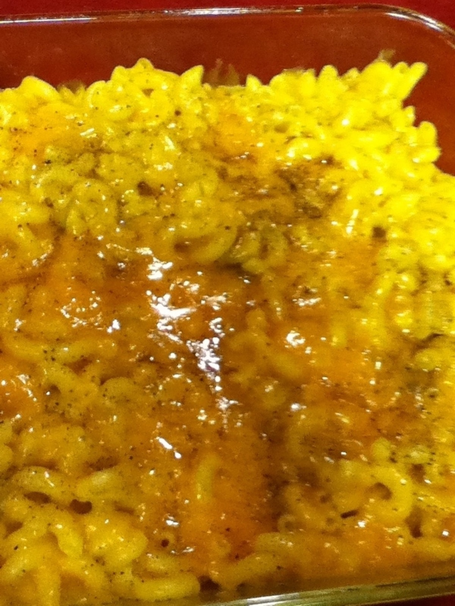

Smooth Mac and Cheese

Description
Get ready for a smooth, smothered mac and cheese recipe that won't get packed in with the leftovers! This
classic side dish is sure to be the first to go!
Ingredients
- Any mac and cheese box from your local store
- 1 lb of cheddar cheese
- Butter
Directions
- Open mac and cheese box and set aside powdered cheese sauce (we'll need this later!)
- Boil macaroni noodles in pot of water until soft
- Turn stove down until water becomes a simmer
- Add 1 stick of butter to the pot
- Let simmer for 10 minutes
- Add powedered cheese sauce to pot
- Mix well, then drain the pot
- Pour contents of pot into a casserole dish
- Preheat oven to 375°
- Microwave 1 stick of butter until liquid
- Pour stick of butter into casserole dish and stir
- Cover casserole dish with 1lb of cheddar cheese
- Bake in oven for 15 minutes
- Remove and serve while hot!
- Yum!
Previous Dish
Return to Main Page
Next Dish